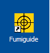
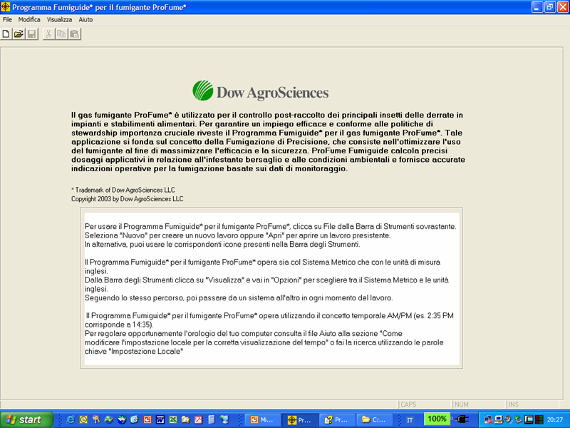
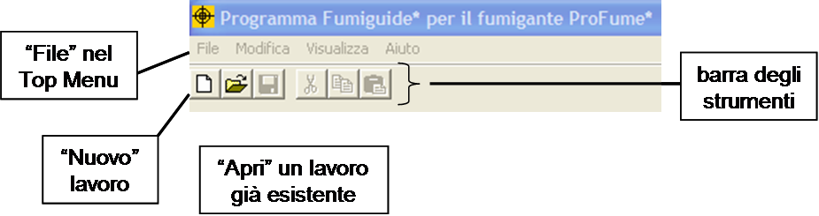
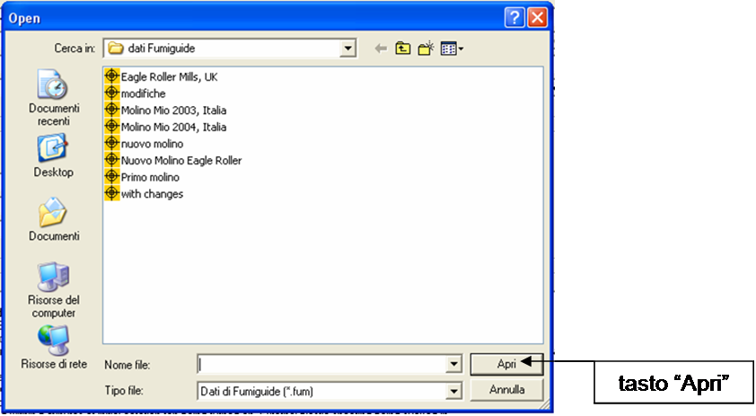
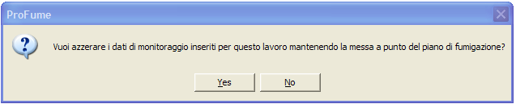
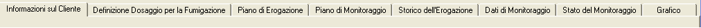
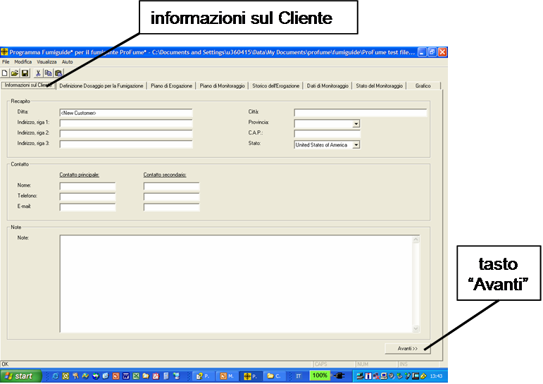
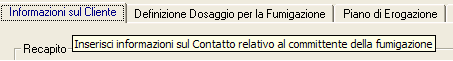
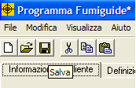

Funzionamento del programma e gestione dei file
Per iniziare a lavorare con ProFume Fumiguide, fare un doppio click sull’icona ProFume nella parte inferiore dello schermo del vostro computer.

Il programma si aprirà alla schermata seguente:

Top Menu: menu
posizionato nella parte superiore dell’applicazione. Le voci del menu includono File, Modifica, Visualizza e Aiuto.
Barra degli strumenti: gruppo di funzioni posizionato sotto il Top Menu: Nuovo, Apri, Salva, Taglia, Copia e Incolla.

Ora che
il programma ProFume Fumiguide è in funzione, andare su "File" nel Top Menu in alto. Selezionare "Nuovo" se si sta creando un nuovo lavoro, oppure selezionare "Apri" per aprire un lavoro già esistente. In alternativa si possono usare anche le icone nella casella degli strumenti.
Quando aprite un lavoro già esistente, tutti i file precedentemente salvati saranno rintracciabili nella cartella dove sono stati collocati (vedere sotto). Selezionate il file nella cartella cliccando sul nome del file, ad esempio "with changes.fum" e cliccando su "Apri".

Se state effettuando la
fumigazione in una struttura che avete già fumigato in precedenza e avete un
file Fumiguide relativo al trattamento fatto, potete lavorare su quel file
aprendolo e modificandolo, salvandolo prima con un nuovo nome che identifichi il lavoro in esecuzione. Per esempio, se avete un file "Pinnacle03.fum" e nella stessa struttura si effettua una fumigazione nel 2004, potete semplicemente aprire quel file, aggiornare i dati con i dettagli correnti e salvare il nuovo file come "Pinnacle04.fum". Ricordatevi di usare l’operazione Salva con nome (F12) sotto la voce File nel Top Menu. Ciò vi permetterà di risparmiare del tempo, evitando di dover inserire le informazioni sul cliente e le condizioni di fumigazione, laddove non siano cambiate.
Prestate attenzione alla finestra di messaggio che apparirà
non appena eseguirete l’operazione Salva con nome [nuovo nome del file]. Se nel nuovo file non volete mantenere i dati di monitoraggio della concentrazione di ProFume, selezionate SI. Se invece volete mantenere nel nuovo file i dati di monitoraggio della concentrazione di ProFume, selezionate NO.

ProFume Fumiguide si aprirà visualizzando il tab "Informazioni sul Cliente" (vedere sotto). Osservate agli altri tab presenti in Fumiguide:

Ecco una descrizione di questi tab.
Informazioni sul Cliente – Primo tab
di ProFume Fumiguide, dove si possono memorizzare l’indirizzo, i dettagli del
contatto e le annotazioni utili per la fumigazione.
Definizione Dosaggio per la Fumigazione
– Secondo tab di ProFume Fumiguide, dove vengono inserite tutte le
informazioni e le variabili relative al calcolo della concentrazione e del
dosaggio di fumigante.
Piano di Erogazione – Terzo tab di
ProFume Fumiguide, dove vengono riportate le Linee di erogazione del gas e i
rispettivi ventilatori per il calcolo del Tasso effettivo e del Tasso consentito
di erogazione del fumigante nelle varie aree della struttura.
Piano di Monitoraggio: Quarto tab di
ProFume Fumiguide, per inserire le informazioni relative alle linee di
monitoraggio (punti di monitoraggio per area).
Storico dell’Erogazione: Quinto tab di
ProFume Fumiguide dove vengono riportate le quantità di fumigante rilasciate
nelle varie zone della struttura.
Dati di Monitoraggio: Sesto tab di
ProFume Fumiguide per l’inserimento dei dati di monitoraggio.
Stato del Monitoraggio: Settimo tab di
ProFume Fumiguide, dove il Tempo Trascorso, il TdD, il Tempo di Inizio e Fine
Conteggio del TdD, il CT Raggiunto, il CT Pianificato e lo Stato/Raccomandazioni
sono visualizzati per punto di monitoraggio.
Grafico: Ottavo tab di ProFume
Fumiguide per la rappresentazione grafica dell’andamento della concentrazione
nel tempo per punto di monitoraggio.
Potete
passare al tab successivo cliccando sul pulsante Avanti situato in basso a destra in tutti i tab ProFume Fumiguide (tranne il tab Stato del Monitoraggio). Oppure potete cliccare direttamente sul nome del tab nella parte superiore dello schermo.

Messaggi "Mouse Over"
Nell’utilizzare ProFume Fumiguide noterete dei messaggi che vengono visualizzati momentaneamente passando il cursore su alcuni punti dello schermo. Questi utili messaggi spiegano o chiariscono la funzione corrispondente alla posizione del cursore. Ecco due esempi di messaggi "Mouse Over":

Dopo aver
lavorato su un file, si consiglia di salvarne le informazioni cliccando
sull’icona "Salva". NOTA: Si raccomanda di salvare i dati frequentemente, man
mano che vengono inseriti.

A questo punto si aprirà la
finestra Salva, dove andrà
inserito un nome appropriato al file in uso (in base alla data, al nome del lavoro, al luogo di fumigazione, ecc.).

Funzionamento simultaneo di copie multiple di
Fumiguide. ProFume Fumiguide è progettato in modo che si possano far funzionare contemporaneamente delle copie multiple del programma tenendo aperti dei lavori separati.